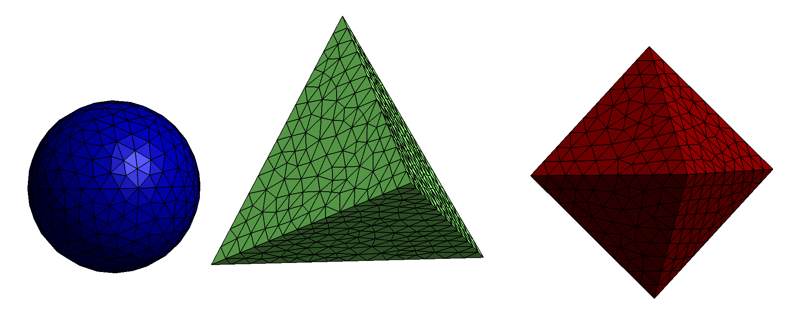
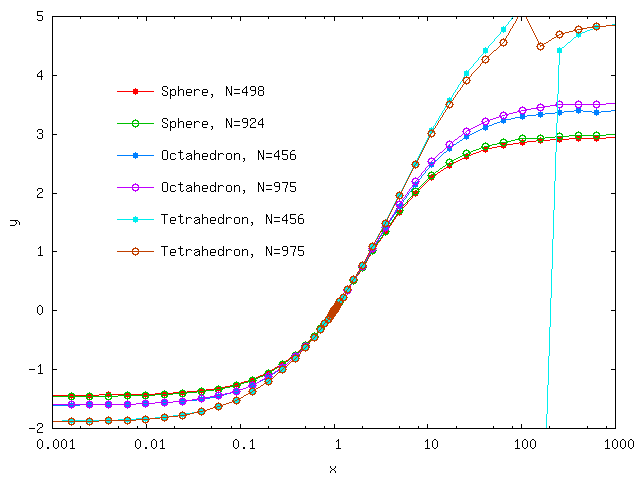

Electrostatic polarizability of platonic solids
In this example we use the scuff-static electrostatic module of scuff-em to compute the DC polarizabilities of dielectric bodies with regular shapes and varying dielectric permittivity. This example was inspired by this paper:
The files for this example may be found in the
share/scuff-em/examples/PlatonicSolids subdirectory
of your scuff-em installation.
gmsh geometry files for spherical, tetrahedral, and octrahedral particles
The gmsh geometry files
Sphere.geo,
Tetrahedron.geo
and
Octahedron.geo
respectively describe spherical, tetrahedral, and
octahedral particles.
I turn them into .msh files describing surface meshes of
two different finenesses by running the following bash
script, which invokes the
RenameMesh
script:
#!/bin/bash
for SCALE in 1.0 0.7
do
for SHAPE in Sphere Tetrahedron Octahedron
do
gmsh -clscale ${SCALE} -2 ${SHAPE}.geo -o ${SHAPE}.msh
RenameMesh ${SHAPE}.msh
done
done
Note: The .geo files contain a variable parameter L that
sets the sphere radius or the polygon edge length. In each case,
the default value of L is chosen to ensure that the volume
of the result particle matches the volume of a sphere of radius
1, but you may override this setting (to set L to a value of,
say, 2.34) by adding the command-line option -setnumber L 2.34
to the gmsh command above.
Here are pictures of the finer of the three meshes produced by this procedure:

Polarizability of a dielectric sphere
Here's a simple scuff-em geometry file named E10Sphere.scuffgeo that describes a dielectric sphere with relative permittivity :
OBJECT Sphere
MESHFILE Sphere_501.msh
MATERIAL CONST_EPS_10
ENDOBJECT
To compute the DC polarizability of this object, we say
% scuff-static --Geometry E10Sphere.scuffgeo --PolFile E10Sphere.pol
This produces a file named E10Sphere.pol, which reports
all 9 components of the DC polarizability tensor for the
sphere:
# data file columns:
# 01: object label
# 02: alpha_{xx}
# 03: alpha_{yx}
# 04: alpha_{zx}
# 05: alpha_{xy}
# 06: alpha_{yy}
# 07: alpha_{zy}
# 08: alpha_{xz}
# 09: alpha_{yz}
# 10: alpha_{zz}
Sphere 9.221300e+00 6.692939e-03 4.299017e-02 1.225110e-02 9.231265e+00 1.831022e-03 -1.860956e-02 1.039749e-02 9.233396e+00
Here are some observations on this result:
-
The diagonal components here are in decent agreement with the theoretical value of .
-
The slight discrepancies between the three diagonal components arise because the surface mesh slightly breaks rotational symmetry of the sphere.
-
The nonzero values of the off-diagonal components are numerical noise.
In all three cases, the result is improved by running calculations with finer surface meshes.
Polarizability of a dielectric cavity
Here's an alternative geometry file describing a spherical vacuum cavity in a universe filled with dielectric material:
MEDIUM
MATERIAL CONST_EPS_10
ENDMEDIUM
OBJECT Sphere
MESHFILE Sphere_501.msh
MATERIAL CONST_EPS_1
ENDOBJECT
The polarizability data predicted by scuff-static for this geometry are
Sphere -5.168105e+00 3.103541e-03 1.420259e-02 3.842746e-03 -5.164908e+00 -1.409712e-03 -6.971980e-03 4.036885e-03 -5.165247e+00
The diagonal components here agree with the theoretical value of .
bash script to run calculations at many different permittivities
Ultimately we want to compute the polarizability at many
different values of the interior and exterior permittivity,
and it would be unwieldy to have to repeat the above process
by hand in each case. Instead, it's convenient to write a
a bash script to automate the process. This script
is called GetPolVsTau.sh. It has a
hard-coded list of surface meshes and reads pairs of
interior and exterior permittivity values
in the form (EpsOut, EpsIn) from a file named
EpsFile. For each surface mesh and each
pair of permittivity values, the script does the
following:
-
It constructs a
.scuffgeofile for the given mesh and permittivity values by appropriately modifying a template file calledTemplate.scuffgeo. -
It runs scuff-static to get the polarizability for this object with this pair of permittivity values.
-
It reads the resulting polarizability data from the output file written by scuff-static and writes the data, together with the (EpsOut, EpsIn) values, to an overall output file for the shape in question.
This script, which takes about 10 minutes to run on my laptop,
produces a series of files with names like
Tetrahedron_1179.AlphaVsTau. Here Tau refers to the quantity
defined in the paper by Sihvola et al. referenced above.
Plotting polarizability vs. for the three shapes reproduces Figure 4 of the paper by Sihvola et al. referenced above, except for something funky that appears to be happening for the tetrahedron around

Incidentally, here's the gnuplot script that I
used to produce this plot: Plotter.gp.